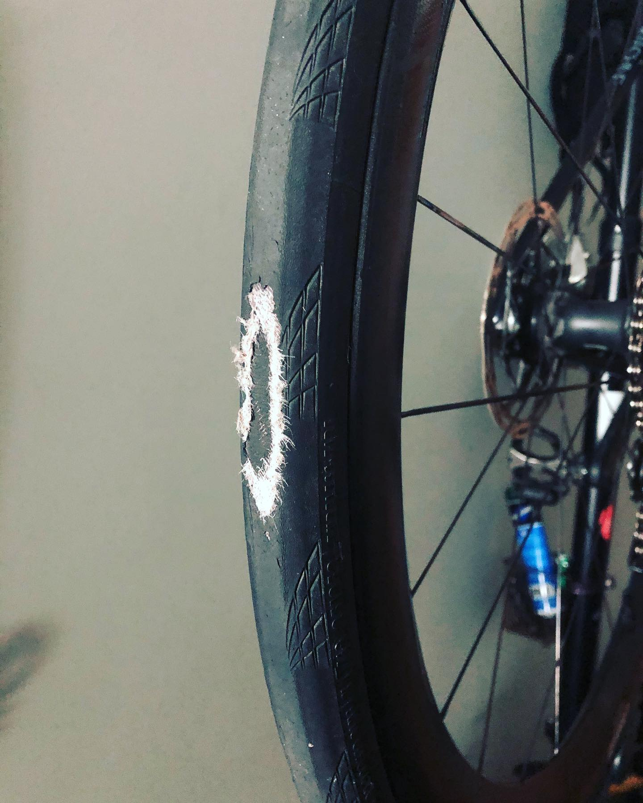
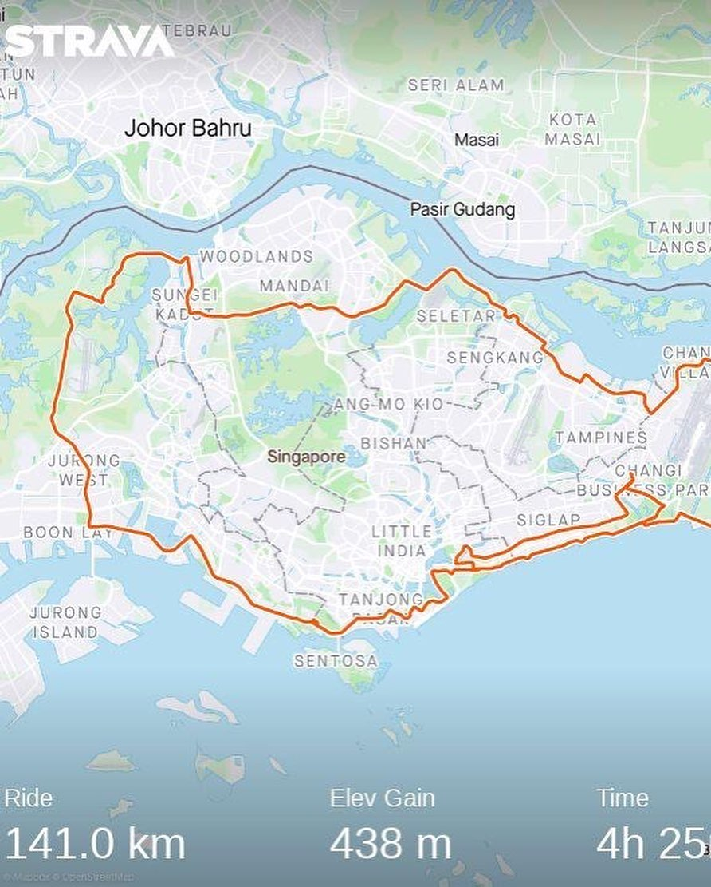

What a ride it was this morning! 😟 RIP my dear tubeless @continental_tire 😞 It could have been a totally stupid crash for sure, — thankfully I’m safe... On a straight, dedicated lane for cyclists (Park Connector, PCN), spinning in Z1 well-within 25 km/h speed limit after decent threshold-level group ride around #singapore . I’m riding with full awareness to enjoy the views, it’s my 120th km or so, and after few km-a I am going to dial up back to 230W average. PCN is a few meters wide and has a sidewalk for pedestrians, from which, out of nowhere, glued in to her #pokemongo or whatever she rushes across right into my wheel. I’m in the hoods but front brake will launch me in to somersault, so I brake hard and destroy my #Conti. AND GUESS WHAT SHE SAYS?.. (leave your guesses in comments) ___ #cycling #cyclinglife #weekendwarrior #swimbikerun #continentaltires #sgcycling #comments
2020-11-14 17:42:54
Back to main page